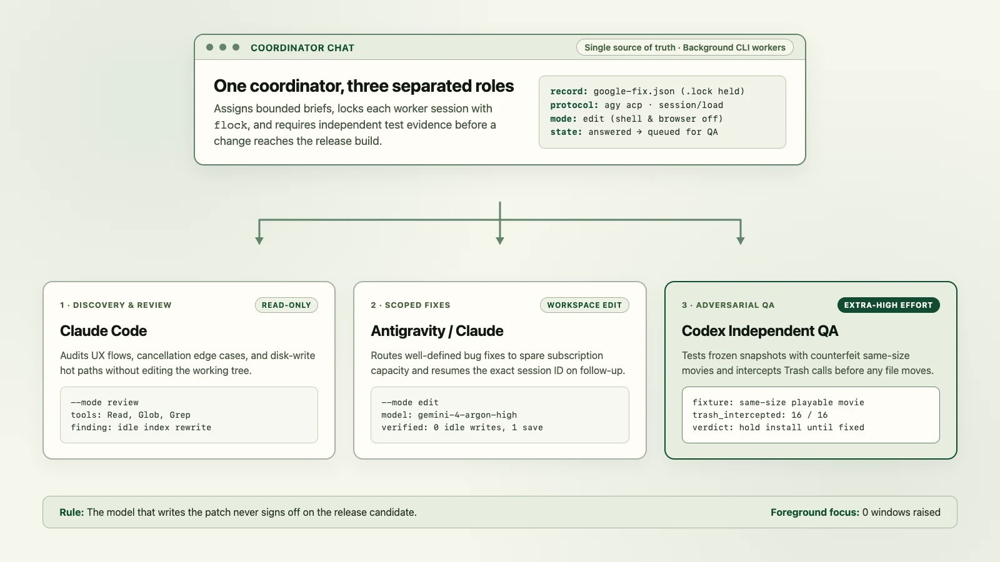

While preparing the 1.2.1 update for Cloud Media Shrinker, I had six separate agent threads open across three providers. Two of them had nearly identical titles, one bug had already been fixed in a different chat, and I was spending too much time copying test results between windows.

I turned one thread into the project coordinator and built a small local orchestration skill (orchestrate-agents) around it. Now I talk to the coordinator, and it routes planning, discovery, implementation, and independent QA across Claude Code, Codex, and Google Antigravity.
Separating discovery, editing, and verification
When the same model writes a fix and writes the test for that fix, both often share the same blind spot. Giving those jobs to different models with different permissions caught bugs that single-session reviews missed.
Planning, discovery, and edits
Plans and patches
Adversarial release QA
Tries to break the patch
Each provider gets the role that fits both its strengths and my remaining plan limits:
- Planning and open-ended audits: Read-only sessions inspect UX flows, performance hot paths, and existing tests, and draft implementation plans before any file is touched. Antigravity exposes separate quota pools for Gemini (
gemini-4-carbon-*,gemini-4-argon-*,gemini-3.8-flash-*) and for hosted Claude and OSS models (claude-opus-5-5-*,claude-sonnet-5-5-*), so the coordinator checks live headroom in AI Usage before picking a pool. For Claude runs up tohigheffort, it routes through Antigravity's Claude pool first when that bucket has more room than direct Claude Max, saving directclaudesessions forxhighormaxeffort. During the 1.2.1 review, that read-only pass found a cancellation test that could pass even when the job finished normally and an index file that was rewriting 2.26 MB to disk on idle checks. - Scoped implementation: Well-defined fixes with a clear reproduction and a host test command run in
gemini-4-carbon-medium(orgemini-4-argon-high) inside an isolated APFS clone, seeded with the exact--include-pathfiles returned by discovery so the editor doesn't burn tokens grepping the whole repository. - Blast-radius-gated QA: Routine deterministic fixes (layout, copy, caching, pure unit-tested logic) settle on the host test runner and diff review without spending a separate LLM review pass. Destructive or stateful changes (Trash deletion, billing and credits, auth, migrations, concurrency) go to a cross-family session at high or extra-high effort (
GPT-6.1 Terraatxhighwhen Codex headroom allows, or Claude Opus testing a Gemini patch and vice versa) before anything is installed on my Mac or test phone.
For delegated planning, the coordinator picks the highest-intelligence model among pools with healthy quota remaining ahead of their weekly reset rather than draining a scarce bucket. After auditing my own Claude Code transcripts, I set a three-rung effort ladder for planning workers that never uses low and steps up whenever a task sits between two levels:
| Effort | When the coordinator picks it | Quota rule |
|---|---|---|
| medium | Small, localized, reversible UI, copy, or wiring changes where the files and invariants are already known. | Used only when certainty is already high. |
| high | Default for real plans: multi-file edits, state or ranking logic, UX trade-offs, and competing requirements. | Routes to Gemini 4 Carbon or Antigravity's Claude Opus pool before direct Claude Max when headroom allows. |
| xhigh / max | Irreversible data safety, Trash or deletion guards, billing and entitlements, migrations, auth, or repeat bugs that survived a prior fix. | Uses direct Claude Code or Codex extra-high when those pools aren't near their weekly cap. |
Why independent QA mattered on a deletion check
Cloud Media Shrinker lets you compress a large video and then move the original to the Trash once the smaller copy is verified. A bug in that check can cost someone a video they care about, so I wanted the QA pass to be adversarial.
- First patch checks file sizeThe editor updates the deletion guard so a replaced smaller copy with a different byte count is refused.
- QA tests a same-size replacementThe independent tester swaps in a different file with the exact same byte count and shows it still reaches the intercepted Trash step.
- QA upgrades the fixture to a playable movieTo rule out a check that only catches corrupt files, the tester builds a playable red video matching the black test video's exact byte size.
- Second patch samples 16 byte blocksThe editor hashes 16 slices across the file. The tester constructs two playable videos that match in all 16 sampled blocks but differ in between.
- Release stays on hold until full identity passesEvery test intercepts the Trash request before any file moves, and the coordinator holds device installs until the full check passes.
If the editor had written its own verification test, the first size check would have passed and shipped. Having a second model try to construct a counterfeit file that satisfied the guard turned a plausible patch into a real guarantee.
Keeping the coordinator free and scaling parallel work
In the first version of the workflow, the coordinator still ran multi-step codebase searches and drafted plans inline. Whenever it spent three minutes reading ten files, my main chat turn was tied up and I couldn't talk to it.
Now the coordinator stays strictly lightweight: it reads the status board, checks live quota headroom, dispatches or messages workers, and answers questions from evidence already in hand. Even when I ask to review a plan before any code changes, it delegates read-only exploration and plan drafting to a background worker and hands control right back with a clickable link.
- Inline model and effort tags on every handoff: Subagent pills in desktop apps often hide which model and thinking tier ran, so every worker link now carries its active
(Model · Effort)inline (for example,Savings Investigator (Carbon · High)). - Truthful worker titles across phases: Reusing an older worker for a new phase leaves its tab header stuck on yesterday's bug. Workers rename their chat titles when focus shifts, and on platforms that lock a subagent's title at creation, the coordinator spawns a fresh worker with an updated title and two or three lines of context instead of recycling a stale tab.
- Parallel reads and disjoint isolated writers: Independent read-only investigations fan out immediately, and post-edit verification suites (such as iOS Simulator UI tests, Mac test runners, and cross-family review) run concurrently instead of back to back. Parallel editors split across two or three isolated workspaces only when they own non-overlapping files; intertwined edits in the same file stay with a single writer so integration never turns into semantic merge cleanup.
- Hardware- and quota-scaled concurrency: On an M5 Max Mac Studio with healthy quota pools, the coordinator runs two to four concurrent workers and test suites so cores aren't sitting idle while models think. On a lighter M2 MacBook Air or when a weekly pool is tight before reset, it steps down to one or two.
Keeping worker sessions resumable and out of the way
I didn't want orchestration to mean five terminal windows popping up on my screen or stealing keyboard focus while I work. Together with running visible GUI tests in a separate macOS account, the local launcher script keeps background provider chats headless and locked to their workspace:
# Read-only review via Antigravity's Claude pool (or --provider claude)
python3 provider_chat.py start --provider google \
--model claude-opus-5-5-high --effort high --mode review \
--workspace "$workspace" \
--record "$records/opus-review.json" < "$records/review-brief.md"
# Isolated APFS edit in Gemini 4 Carbon with scoped files and host check
python3 provider_chat.py start --provider google \
--model gemini-4-carbon-medium --effort medium \
--mode edit --isolate apfs \
--include-path src/format.py --include-path tests/test_format.py \
--verify-cmd "python3 -B -m unittest discover -s tests" \
--workspace "$workspace" \
--record "$records/carbon-fix.json" < "$records/fix-brief.md"
python3 provider_chat.py resume \
--record "$records/carbon-fix.json" < "$records/retest-brief.md"While building and using the launcher, I ran into six practical traps:
- One-shot print mode can lose context. When I tested resuming a Google session after the first process exited, ordinary print mode returned the same session ID but forgot a value supplied in the first turn. Switching the Google adapter to Antigravity's JSON-RPC Agent Client Protocol (
agy acpwithsession/newandsession/load) preserved the conversation across Gemini, Antigravity-hosted Claude, and OSS models while verifying both the model family and thinking level. - Requested models need receipt verification. Passing a model flag on the command line doesn't prove the provider used it. The launcher inspects the session configuration and token usage table after every run to confirm the exact model and thinking level that answered.
- Full receipts bloat the coordinator's context. Dumping raw turn records and long test logs into the coordinator chat eats context fast. By default,
startandresumeprint a compact JSON summary (state,model,effort,patch,verification,answer), saving full diagnostics for--full-outputorshow --record, and same-session repair prompts trim stdout and stderr to the final 3 KiB per stream. - Failed turns leave partial edits behind. The launcher holds an
fcntl.flocklock on a sibling.lockfile and writes receipts atomically. If a worker is interrupted mid-turn, the record enters aninspectstate and refuses a blind retry until the coordinator checks the transcript and working tree. - Workers stay caged to file tools. In
reviewmode, a worker only gets read, glob, and grep tools. Ineditmode, it can modify regular files inside the assigned workspace, while shell commands, network fetches,.gitmutations, and browser launches are denied. - Isolated APFS clones and sandboxed host verification. Passing
--isolate apfsgives an editor an instant copy-on-write clone of the repo (cp -c), optionally narrowed with--include-path. Then--verify-cmdruns on the host under macOSsandbox-execwith a private temporaryHOME, no network or credentials, and a guard that catches nested coordinator sandboxes cleanly, automatically resuming the same worker session with the failure tail if a check breaks.
Try the skill
The skill, provider launcher, APFS workspace isolator, and verification harness are open source on GitHub under the MIT license. Having one coordinator chat hasn't made the models infallible. It just means when one model makes an optimistic assumption, another one is already waiting to test it.